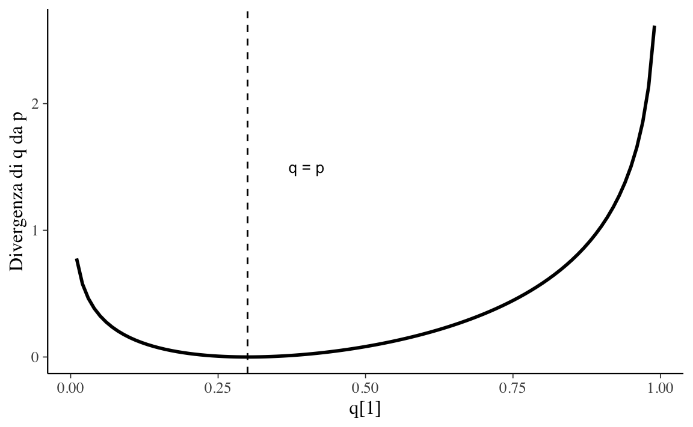

Capitolo 35 Il valore-\(p\)
35.1 Che cos’è un valore-\(p\)?
Il valore-\(p\) viene spesso riportato da coloro che svolgono l’inferenza statistica mediante l’approccio frequentista. Tuttavia, nonostante questa nozione statistica sia spesso usata, il significato di valore-\(p\) è spesso frainteso. Un errore che viene spesso commesso nell’interpretare il valore-\(p\) è quello di assegnare ad esso l’interpretazione secondo la quale un valore-\(p\), diciamo, pari a 0.01, significa che c’è solo una probabilità dell’1% che il risultato osservato sia un falso positivo. È importante evitare i falsi positivi, per esempio quando si valuta l’efficacia di un intervento psicologico, perché affermare che un trattamento è efficace quando in realtà ciò non è vero (falso positivo) conduce alla successiva applicazione di quel trattamento, con il rischio di danni negli utenti e di discredito della professione. L’interpretazione precedente, però, è sbagliata. Il valore-\(p\) non può dirci questo: non può mai essere usato per descrivere il mondo reale. Greenland et al. (2016) esprimono questo punto nel modo seguente:
Thus to claim that the null P value is the probability that chance alone produced the observed association is completely backwards: The P value is a probability computed assuming chance was operating alone. The absurdity of the common backwards interpretation might be appreciated by pondering how the P value, which is a probability deduced from a set of assumptions (the statistical model), can possibly refer to the probability of those assumptions.
Quello che può fare il valore-\(p\) è riassumere i dati ottenuti dal ricercatore assumendo vera una specifica ipotesi nulla: il valore-\(p\) descrive quello che succederebbe in un mondo ipotetico, se l’ipotesi nulla fosse vera. Nello specifico, il ricercatore si chiede: se fosse vera l’ipotesi nulla (ad esempio, se il trattamento non fosse efficace così da non avere nessuna differenza tra il gruppo del trattamento e il gruppo di controllo), quale sarebbe la probabilità di osservare un valore uguale a quello della statistica osservata nel campione, o un valore ancora più estremo di tale statistica? In altri termini, il valore-\(p\) descrive quello che succederebbe in un mondo ipotetico, il mondo basato sull’idea che l’ipotesi nulla sia vera e nel quale vengono rispettate tutte le assunzioni del modello statistico. Nulla ci dice, il valore-\(p\), della plausibilità delle assunzioni che sono state fatte, né tanto meno sulle proprietà del mondo empirico.
Per fare delle inferenze sul mondo empirico è necessario possedere altre informazioni, per esempio, la verosimiglianza dell’effetto considerato. Nuzzo (2014) ci propone il seguente esempio. Ci svegliamo la mattina con il mal di testa e concludiamo che abbiamo un raro tumore al cervello. È possibile che questo sia vero, ma è molto improbabile. Per concludere che abbiamo un tumore sono necessarie evidenze ulteriori, oltre al mal di testa, dato che il mal di testa può essere provocato da tantissime cause diverse dal tumore. Tanto più è inverosimile l’ipotesi del ricercatore (il tumore dell’esempio, ma anche la telepatia, l’omeopatia e l’esistenza degli alieni), tanto maggiore è la probabilità che il risultato osservato sia un falso allarme, indipendentemente da quello che ci dice il valore-\(p\). In altri termini, è la verosimiglianza di un evento che determina la probabilità di un falso allarme, non il valore-\(p\).
Nel 2016 l’American Statistical Association ha pubblicato un articolo nel quale Wasserstein and Lazar (2016) esprimono la loro preoccupazione relativamente all’uso inappropriato che viene fatto del valore-\(p\) nella pratica scientifica. Il punto che abbiamo discusso in precedenza è espresso nei termini seguenti:
\(P\)-values do not measure the probability that the studied hypothesis is true, or the probability that the data were produced by random chance alone. Researchers often wish to turn a \(p\)-value into a statement about the truth of a null hypothesis, or about the probability that random chance produced the observed data. The \(p\)-value is neither. It is a statement about data in relation to a specified hypothetical explanation, and is not a statement about the explanation itself.
35.2 L’uso del valore-\(p\) nel mondo della ricerca
Tra i tanti articoli che sono stati dedicati a questo tema, possiamo citare qui un articolo di Nuzzo (2014) che descrive i limiti dell’uso del valore-\(p\) all’interno della pratica scientifica. Nuzzo (2014) ci ricorda che Ronald Fisher ha introdotto il valore-\(p\) negli anni ‘20, ma non ha mai pensato ad esso come ad un test formale. Per Fisher, il valore-\(p\) era uno strumento per giudicare informalmente se l’evidenza empirica fosse “significativa”, laddove il termine “significativo” veniva inteso nel senso colloquiale del termine, ovvero come qualcosa che merita di essere considerata con attenzione. Secondo Fisher, lo sperimentatore propone un’“ipotesi nulla” che spera di dimostrare falsa (per esempio, l’assenza di differenza tra due gruppi). Poi gioca a fare l’avvocato del diavolo e assumere che l’ipotesi nulla sia vera. Questo gli consente di calcolare la probabilità di osservare un risultato altrettanto estremo o più estremo di quello trovato, se il risultato trovato è interamente dovuto alla sola variabilità campionaria. Questa probabilità è appunto il valore-\(p\). Lo scopo di questo modo di procedere è quello di valutare l’ipotesi nulla: secondo Fisher, la probabilità che l’ipotesi nulla sia falsa è tanto più grande quanto più piccolo è il valore-\(p\). Anche se il valore-\(p\) è un numero calcolato con una procedura matematica, per Fisher esso è solo uno strumento da usare all’interno di un processo (inferenziale) non numerico capace di combinare le evidenze empiriche correnti con le conoscenze precedenti del ricercatore.
Il processo di decisione che il ricercatore mette in atto quando valuta i risultati di un esperimento venne formalizzato, alla fine degli anni ’20, da due rivali di Fisher, il matematico Jerzy Neyman e lo statistico Egon Pearson. Neyman e Pearson si posero problema di rendere il processo di decisione “rigoroso e obiettivo”. Allo scopo di fare questo, Neyman e Pearson introdussero, tra l’altro, i concetti di potere statistico e di falso positivo (i concetti che abbiamo visto nei paragrafi precedenti). Non usarono invece, all’interno della procedura proposta, la nozione di valore-\(p\).
Questi due approcci contrapposti portarono ad un dibattito molto acceso tra di due gruppi: Neyman descrisse il lavoro di Fisher come matematicamente “worse than useless”; Fisher chiamò l’approccio di Neyman “childish” e “horrifying [for] intellectual freedom in the west”. Mentre questo dibattito si sviluppava, altri autori iniziarono a scrivere dei manuali di statistica allo scopo di fornire uno strumento di lavoro ai ricercatori. Dato che molti di questi autori non erano statistici, non avevano una comprensione profonda di cosa distinguesse l’approccio di Fisher, da una parte, e l’approccio di Neyman e Pearson, dall’altra, e finirono per creare un sistema ibrido che utilizzava il valore-\(p\) proposto da Fisher (che era un numero facile da calcolare) all’interno del “sistema rigoroso” proposto da Neyman e Pearson. È in questo contesto che la soglia di un valore-\(p\) pari a 0.05 venne definita “statisticamente significativa”. Dal punto di vista storico, dunque, si può dire che il valore-\(p\) proposto da Fisher non fu mai pensato come qualcosa che può essere usato nel modo in cui il valore-\(p\) viene usato al giorno d’oggi nel mondo della ricerca.
In uno dei sei “principi” che vengono enunciati, l’ASA continua dicendo quanto segue:
Scientific conclusions and business or policy decisions should not be based only on whether a \(p\)-value passes a specific threshold.Practices that reduce data analysis or scientific inference to mechanical “bright-line” rules (such as “\(p < 0.05\)”) for justifying scientific claims or conclusions can lead to erroneous beliefs and poor decision making. A conclusion does not immediately become “true” on one side of the divide and “false” on the other. Researchers should bring many contextual factors into play to derive scientific inferences, including the design of a study, the quality of the measurements, the external evidence for the phenomenon under study, and the validity of assumptions that underlie the data analysis. Pragmatic considerations often require binary, “yes-no” decisions, but this does not mean that \(p\)-values alone can ensure that a decision is correct or incorrect. The widespread use of “statistical significance” (generally interpreted as “\(p \leq 0.05\)”) as a license for making a claim of a scientific finding (or implied truth) leads to considerable distortion of the scientific process.
35.3 \(P\)-hacking
La fallacia maggiore associata all’uso del valore-\(p\) è chiamata “\(P\)-hacking” (o anche “data-dredging”, “snooping”, “fishing”, “significance-chasing”, “double-dipping”). Secondo Uri Simonsohn della Università della Pennsylvania, “\(P\)-hacking is trying multiple things until you get the desired result.” Esempi di \(P\)-hacking sono: “That finding seems to have been obtained through \(p\)-hacking, the authors dropped one of the conditions so that the overall \(p\)-value would be less than .05”, oppure “She is a \(p\)-hacker, she always monitors data while it is being collected.” La pratica del \(P\)-hacking ha l’effetto di trasformare uno studio esplorativo (che dovrebbe essere sempre considerato con cautela) in uno studio (apparentemente) confermativo, con la conseguenza di proporre risultati che hanno una probabilità pressoché nulla di essere replicati in studi successivi. Le simulazioni di Simonsohn hanno mostrato come il cambiamento di poche decisioni all’interno del processo di analisi dei dati possa aumentare fino al 60% il tasso di falsi positivi in un singolo studio.
La pratica del \(P\)-hacking emerge soprattutto negli studi che si pongono il problema di dimostrare piccoli effetti usando dati molto rumorosi. In un’analisi della letteratura psicologica, Simonsohn ha trovato che i valori-\(p\) riportati dagli psicologi tendono a concentrarsi su valori appena superiori alla soglia “minima” dello 0.05 (figura 35.1). Questo risultato può essere interpretato come conseguenza della pratica del \(P\)-hacking: infatti, i ricercatori sembrano seguire la prarica che li porta ad eseguire molteplici test di significatività statistica, fino a trovare un risultato “statisticamente significativo”, per poi pubblicare quello. Come mostra la figura 35.1, questa pratica non riguarda solo la psicologia ma è diffusa in tutti i campi della ricerca scientifica.

FIGURA 35.1: Distribuzione dei valori-\(p\) nelle pubblicazioni scientifiche di economia, psicologia e biologia.
35.4 Critiche al valore-\(p\)
Il valore-\(p\) è stato paragonato alle zanzare (creature noiose e impossibili da mandare via), ai vestiti nuovi dell’imperatore (ovvero, il fatto per cui la maggioranza sceglie di non riconoscere i problemi che sono ovvi a tutti, ma preferisce fingere di non vederli), o ad un “sterile intellectual rake” che non produce nulla. È stato ironizzato che l’unica ragione di chiamare questa procedura “statistical hypothesis inference testing” è per l’acronimo che tale espressione produce.
È stato messo in evidenza il fatto che valore-\(p\) incoraggia un modo di pensare sbagliato, in quanto sposta l’attenzione dal problema centrale della ricerca, ovvero il problema della dimensione dell’effetto, verso un problema irrilevante, ovvero quello di dimostrare falsa un’ipotesi fantoccio che sappiamo essere falsa (l’ipotesi nulla). L’esempio che Nuzzo (2014) propone è quello di uno studio su più di 19,000 individui che ha mostrato come coloro che incontrano il loro partner online hanno una probabilità minore di divorziare (\(p <\) 0.002) e mostrano livelli maggiori di soddisfazione maritale (\(p <\) 0.001) rispetto alle coppie che non si sono conosciute online. Questo può sembrare un risultato interessante fino a quando non consideriamo la dimensione dell’effetto: per coloro che si sono conosciuti online il tasso di divorzi diminuisce dal 7.67% al 5.96%, mentre l’indice di soddisfazione maritale aumenta solo da 5.48 a 5.64 su una scala a sette passi. In generale, la domanda da porsi, infatti, non è “c’è un effetto?” ma bensì “quanto è grande l’effetto?”
35.5 L’effetto sperimentale è esattamente nullo?
Una delle critiche più ovvie alla logica della verifica delle ipotesi statistiche riguarda il fatto che non è ragionevole supporre che l’effetto della manipolazione sperimentale sia esattamente nullo. Un esempio preso dalla fisica illustra questo punto. Borel (1914) ha dimostrato che lo spostamento di un centimetro di un grammo di massa in una stella a qualche anno luce da noi modifica il movimento delle molecole di un gas sulla terra.
Se, come sembra, tutto è collegato con tutto, allora è ragionevole supporre che la manipolazione sperimentale, quale essa sia, un qualche effetto lo produca sempre. Come Andrew Gelman ha ripetuto molte volte, il punto non è dimostrare falsa l’affermazione secondo cui la manipolazione sperimentale produce un effetto esattamente nullo. Importante invece è stabilire se la dimensione dell’effetto sia sufficientemente grande da avere una qualche importanza dal punto di vista pratico, e stabilire se l’effetto sia riproducibile.
Se questi sono gli obiettivi, allora la logica della verifica dell’ipotesi nulla si dimostra problematica. Infatti, come abbiamo visto sopra, nel caso di piccoli campioni e di piccoli effetti (caso, questo, che descrive la quasi la totalità delle ricerche in psicologia), le procedure frequentiste conducono ad una notevole sovrastima della dimensione dell’effetto. Inoltre, tendono a favorire un un pensiero binario basato sulla dicotomia vero/falso, mentre quello che è importante non è rifiutare un’ipotesi (nulla) che è sicuramente falsa, ma riuscire ad ottenere una stima non distorta della vera dimensione dell’effetto.
La simulazione descritta sopra non mostra soltanto che, nelle condizioni considerate, la stima della grandezza dell’effetto risulti fortemente esagerata, ma anche che la direzione dell’effetto possa anche essere stimata incorrettamente. Nella simulazione descritta, questo si verifica solo in un campione su 40 tra quelli che producono un valore-\(p >\) 0.05, ma l’esame di dati reali tratti dalla letteratura psicologica mostra che la probabilità di questo errore di segno possa essere molto maggiore. Gelman and Carlin (2014) chiamano i due tipi di errori che abbiamo discusso qui errori di Tipo S (Sign) e errori di Tipo M (Magnitude). Gelman and Carlin (2014) sono molto critici rispetto all’uso corrente che porta a descrivere i dati degli esperimenti per mezzo di concetti quali la “significatività statistica”, il “potere statistico”, l’“errore di tipo I” e l’“errore di tipo II” e affermano che sia più utile mettere in evidenza la probabilità di un errore di Tipo S e di Tipo M (uno script \(\mathsf{R}\) che consente di calcolare la probabilità di errore di Tipo S e di Tipo M è fornito nel loro articolo). Gelman and Carlin (2014) concludono il loro articolo con la raccomandazione secondo la quale, per minimizzare i falsi positivi in psicologia, è necessario aumentare notevolmente la dimensione del campione rispetto agli standard correnti. Un punto analogo è anche fornito nell’articolo di Loken and Gelman (2017).
35.6 Simulazione
In questa simulazione esaminiamo le conseguenze che derivano dall’applicazione della procedura del test dell’ipotesi nulla al caso di una piccola dimensione dell’effetto nella popolazione e di un campione di piccole dimensioni – ovvero viene considerato il caso tipico di un esperimento di psicologia. L’idea è stata proposta da Gelman and Carlin (2014).
35.6.1 La dimensione dell’effetto
La dimensione dell’effetto si calcola con la statistica \(d\) di Cohen definita come segue:
\[ d = \frac{\bar{X}_1 - \bar{X}_2}{s_p} \]
dove
\[ s_p = \sqrt{ \frac{s_1^2 (n_1 - 1) + s_2^2 (n_2 - 1)}{n_1 + n_2 - 2} } \]
La statistica \(d\) di Cohen si interpreta nel modo seguente:
- d = 0.2 effetto piccolo
- d = 0.5 effetto medio
- d = 0.8 effetto grande
35.6.2 Una piccola dimensione dell’effetto nella popolazione
Consideriamo due ‘popolazioni’ la cui distribuzione è Normale di media 103 (la prima) e 100 (la seconda). Per entrambe, la deviazione standard è uguale a 15.
# Popolazione 1
mu_1 <- 103
# Popolazione 2
mu_2 <- 100
# SD comune
sigma <- 15La dimensione dell’effetto nella popolazione è dunque uguale a
(mu_2 - mu_1) / sigma
#> [1] -0.2Se prendiamo dei campioni enormi
x1 <- rnorm(1e5, mu_1, sigma)
x2 <- rnorm(1e5, mu_2, sigma)e applichiamo la formula precedente, otteniamo una stima non distorta della vera dimensione dell’effetto.
nn <- length(x1) - 1
sp <- sqrt(
(var(x1) * nn + var(x2) * nn) / (nn + nn)
)
sp
#> [1] 14.98042(mean(x1) - mean(x2)) / sp
#> [1] 0.200439Oppure, in maniera equivalente
dc <- cohen.d(x1, x2)
dc
#>
#> Cohen's d
#>
#> d estimate: 0.200439 (small)
#> 95 percent confidence interval:
#> lower upper
#> 0.1916517 0.2092262Ma vediamo cosa succede quando i campioni sono piccoli, ovvero simili a quelli che si usano normalmente in psicologia. Supponiamo che \(n\) = 30. Nella simulazione consideriamo 100,000 coppie di campioni di 30 osservazioni estratte da ciascuna delle due popolazioni.
Per ciascuna coppia di 30 osservazioni, calcoliamo un test di significatività statistica (il famoso test \(t\) di Student) e il \(d\) di Cohen. Alcuni di questi confronti non raggiungono la soglia \(p\) = 0.05 e quindi li escludiamo. Infatti, la consuetudine è di non pubblicare i risultati che non sono “statisticamente significativi” (ovvero, con un valore-\(p\) < 0.05). Conserviamo invece i campioni che sono risultati “statisticamente significativi”.
La domanda che ci poniamo è: in che misura i campioni “statisticamente significativi” rispecchiano le caratteristiche della popolazione da cui sono stati estratti?
nrep <- 1e5
nsample <- 30
alpha <- 0.05
significant <- rep(NA, nrep)
cohen_d <- rep(NA, nrep)
for (i in 1:nrep) {
x1 <- rnorm(nsample, mu_1, sigma)
x2 <- rnorm(nsample, mu_2, sigma)
out <- t.test(x1, x2)
significant[i] <- ifelse(out$p.value < alpha, 1, 0)
dc <- cohen.d(x1, x2)
cohen_d[i] <- dc$estimate
}Intanto calcolo il la proporzione di campioni che producono risultati “pubblicabili”.
summary(significant)
#> Min. 1st Qu. Median Mean 3rd Qu. Max.
#> 0.0000 0.0000 0.0000 0.1189 0.0000 1.0000Dopo avere selezionato soltanto i risultati “statisticamente significativi”
d <- data.frame(
is_significant = significant,
d = cohen_d
)
dim(d)
#> [1] 100000 2
d_pub <- d %>%
dplyr::filter(
is_significant == 1
)
dim(d_pub)
#> [1] 11893 2creo un istogramma della dimensione dell’effetto (calcolata soltanto sui campioni nei quali l’effetto è “statisticamente significativo”).
hist(
d_pub$d,
xlab = "Indice d di Cohen",
ylab = "Densità",
main = "Soltanto risultati pubblicabili",
freq = FALSE
)
abline(v = 0.2, lty = 2, col = "blue")
La simulazione mostra due risultati degni di nota.
- Complessivamente, la dimensione dell’effetto viene di molto sovrastimata.
- In una proporzione non trascurabile di casi, la direzione dell’effetto è sbagliata.
Questa simulazione dunque mostra come, seguendo la procedura frequentista, si ottiene proprio il risultato che si voleva evitare: si giunge “normalmente” alla risposta sbagliata.
35.6.3 Una soluzione (sbagliata)
Per risolvere questo problema è stato proposto da diversi ricercatori di utilizzare un livello \(\alpha\) più “conservativo”.
nrep <- 1e5
nsample <- 30
alpha <- 0.001
significant <- rep(NA, nrep)
cohen_d <- rep(NA, nrep)
for (i in 1:nrep) {
x1 <- rnorm(nsample, mu_1, sigma)
x2 <- rnorm(nsample, mu_2, sigma)
out <- t.test(x1, x2)
significant[i] <- ifelse(out$p.value < alpha, 1, 0)
dc <- cohen.d(x1, x2)
cohen_d[i] <- dc$estimate
}
d <- data.frame(
is_significant = significant,
d = cohen_d
)
d_pub <- d %>%
dplyr::filter(
is_significant == 1
)
hist(
d_pub$d,
xlab = "Indice d di Cohen",
ylab = "Densità",
main = "Soltanto risultati pubblicabili",
freq = FALSE
)
abline(v = 0.2, lty = 2, col = "blue")
Come mostrato dai risultati della simulazione, l’uso di una soglia più “conservativa” non ha altro effetto che quello di esacerbare il problema: la sovrastima della dimensione dell’effetto aumenta.
In conclusione, si può dire che l’uso dell’approccio frequentista garantisce, senza possibilità di dubbio, il fatto di giungere alla conclusione inferenziale sbagliata.